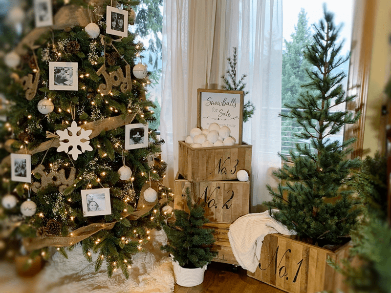

Winter Indoor Snowball Vignette
No matter where you live, artificial snowballs will make for a fun and whimsical addition to your Christmas decor and can even be displayed beyond the holidays.

A few days ago I got to spend the day with a special girlfriend of mine, Leesa. It is always a real treat for me when we get to “play” together. We spent a good chunk of the day in Portland doing a little Christmas shopping, getting lost in a gorgeous forest, and doing a whole lot of laughing. One of our favorite shopping spots is HomeGoods. I might be (yep, I am) ashamed to say out loud how much time we spent in there. While we were standing in line with our treasures piled in the buggy, we came across boxes of fake snowballs. They look incredibly realistic and I decided to have a little fun with them. So in the buggy, they went.
When I got home with them, I decided that I would make a snowball vignette. I jumped on the computer and designed a simple but charming sign that read, “Snowballs for Sale. Made fresh daily.” I uploaded my sign to Walgreen photo and had our local store print it out on 1.3mm paperboard with a semi-gloss finish. You can choose from several different sizes and I decided to make an 11″x14″ size picture. By the time I got to town that afternoon, it was all printed and ready for pick up (same day service). By the way, I am not sponsored by them by any means. I just like using their speedy, quality photo department for fun art projects.
We then swung by the hardware store and picked up a few boards of 1 1/2″ Hemlock wood. It’s a softer wood but I love grain pattern and it is reasonably priced. Once home, Bob and I transformed the straight sticks into a few frames (made one for my girlfriend too). I stained them and stapled the print board to the back of the frame. Super easy. Some of you may not have access to power tools and can’t make a frame, that’s just fine because you can purchase an already made frame and pop it into that if you wanted.
 Snowball Vignette
Snowball Vignette
I don’t have a lot of wall space in our house… it’s a house of windows so when I was thinking of creating this snowball vignette, I knew that it would be in a box, a basket, or something like that. That is why the printing on the sign is a bit higher up on the board. I wanted to leave enough space so the snowballs could pile up in front of the sign and not block the wording.
I settled on a really simple setup. I already had a few wooden boxes stacked next to the Christmas tree, so I placed a riser in the box to give it a higher false bottom. I set the sign on top and added the snowballs. There are so many fun ways that a person could create with these, so look around your house and see what you might already have to create the special little vignette.
Warning if you have 4-legged creatures
If you have pets, keep them in mind when seeking out placement. Milo, our pup, got a hold of one and just as a kid would do, he started to eat it… doh! After that experience, I just made sure they are out of his reach. Cats would have fun with them and if you are ok with that, have at it, it just might make for great entertainment.
If you have kids… I am not sure you could or would want to keep them out of the display. hehe Make the vignette durable so they can indeed play with them, just let them know that they can have a special snowball fight toss in the house, but they just have to pick them up and put them back for the next round. Hmm, maybe I am asking too much? hehe
If you are interested in creating your own display, you can find artificial snowballs (here) and you can download my sign creation (Snowball for Sale Sign) here.
Have a wonderful and blessed holiday, amie sue
© AmieSue.com